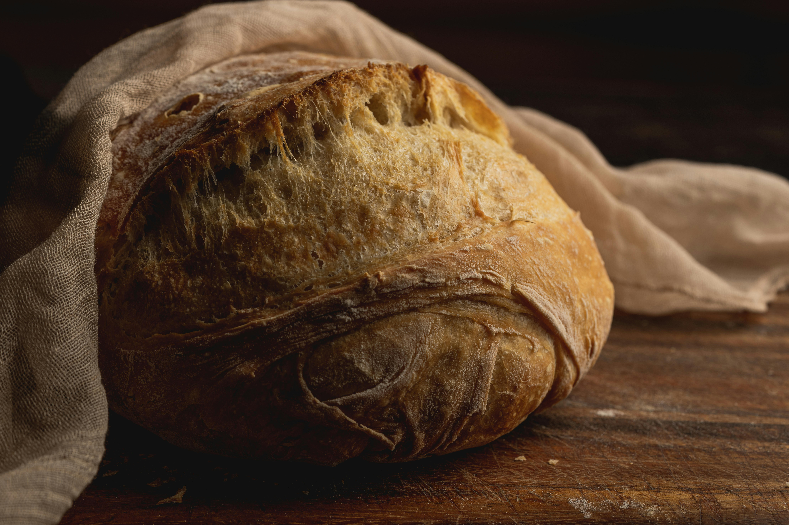
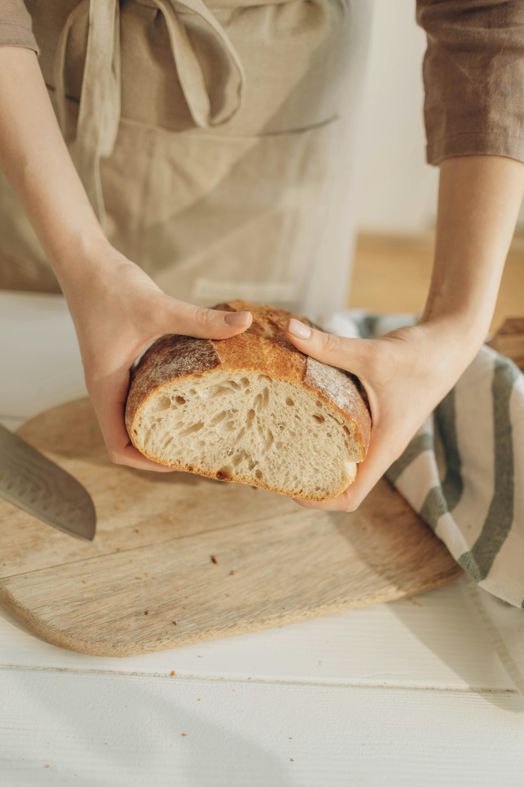

Overnight Bread

A family favorite this no knead bread recipe is incredibly easy to make, perfectly crusty and golden on the outside, and soft and flavorful on the inside.
Whether you are brand new to bread-baking, or just looking for some tried-and-tested recipes to add to your repertoire, I highly recommend bookmarking these recipes if you would like to give no knead artisan bread a try! If you are planning ahead and have the time for an overnight rise, I would recommend going with the traditional version (my favorite) which gives the dough time to develop more of that yeasty, sourdough-like flavor and yields a more airy, porous crumb on the inside.
To make traditional (overnight) no knead bread, you will need the following ingredients:
- Warm water: I recommend using a cooking thermometer to measure the temperature of the water, if you have one. It should be between 105-110°F — which will feel quite warm but not hot to the touch.
- Active dry yeast: You will need less than a packet (1/2 teaspoon) for the overnight version, and one full packet (2 1/4 teaspoons) for the faster version. If you only have instant yeast on hand, see notes below for how to modify.
- All-purpose flour: I highly recommend using a kitchen scale to weigh your flour, if possible, so that the amount is accurate. But if you do not have a scale, just be sure to spoon the flour into your measuring cups (instead of scooping the cups into the flour) to make the measurements more accurate.
- Fine sea salt: To bring out all of those delicious flavors.
Ingredients
| 3 ¼ c |
all purpose flour |
| 2 tsp |
fine sea salt |
| ½ tsp |
active dry yeast |
| 1 ½ c |
warm water (about 110°F) |
Directions
- Mix the dough. Stir together the flour, salt and yeast in a large mixing bowl until combined. Add in the warm water and stir with a wooden spoon or spatula until the dough is evenly mixed and no large flour streaks remain. (The dough will look quite loose and shaggy, which is ok.)
- Let the dough rise. Cover the bowl with plastic wrap or beeswrap, and let the dough rest at room temperature for 12 to 18 hours.
- Shape the dough. Transfer the dough to a well-floured surface. Fold the dough on top of itself — pulling the outer edges up and into the center a few times until the dough feels a bit tighter and holds its shape — to form a round dough ball. (If the dough is sticky or feels too loose at any point, just keep sprinkling on extra flour as needed.) Lightly flour the top of the dough ball, and then carefully flip it upside-down onto a piece of parchment paper, so that the smooth side is on top. Use your hands to shape the ball into an even circle. Lightly flour the top of the dough ball, then loosely cover it with plastic wrap or beeswrap to rest while the oven heats.
- Heat the oven and Dutch oven. Place the Dutch oven inside of your oven*, then set oven to 450°F. Wait for 20-30 minutes for the oven to heat, while the dough continues to rest. (If the dough rises and spreads out more than you would like during this time, just use your hands to shape it into a tighter ball once more just before baking.)
- Bake. Very carefully, use oven mitts to remove the Dutch oven from the oven. (It will be extremely hot!) Lift the edges of the parchment to carefully transfer the dough ball (along with the parchment) to the Dutch oven. Cover with the Dutch oven lid and bake for 30 minutes. Then carefully remove the lid and bake for 10-20 more minutes, until the crust of the bread reaches your desired level of doneness (as light or as deeply golden brown and crispy as you prefer).
- Serve. Remove from the oven, uncover, and then carefully lift up the edges of the parchment to transfer the bread to a wire cooling rack. Cool for at least 30 minutes, then slice, serve and enjoy!
Alternate Variations
- Add in garlic: Mince 1-2 cloves of fresh garlic and stir them into the dough during Step 1.
- Add in herbs: Chopped fresh herbs (such as rosemary, tarragon or sage) or dried herbs (or herb blends such as Italian seasoning or Herbs de Provence) would be lovely additions to this bread too. Just stir them into the dough during Step 1.
- Add everything bagel seasoning: One of my personal faves — stir 1 tablespoon everything bagel seasoning into the dough during Step 1.
- Add freshly-cracked black pepper: Sounds simple, but tastes so good. Just stir into the dough during Step 1.
- Add in Parmesan: Stir 1/4 to 1/2 cup freshly-grated Parmesan cheese into the dough during Step 1.
- Use less salt: If you are sensitive to salt, I recommend reducing the amount of fine sea salt in this recipe by half. And as always, just a reminder that fine sea salt is very different than table salt! (And to make things even more complicated, different brands of fine sea salt can taste more/less salty too.) I like my bread quite salty, but feel free to experiment and use less salt if you prefer.
- Top with flaky sea salt: We also love to sprinkle a few pinches of flaky sea salt on top of the bread just before baking. (If you choose to do this, though, I recommend slightly lowering the amount of salt in the dough itself.)
